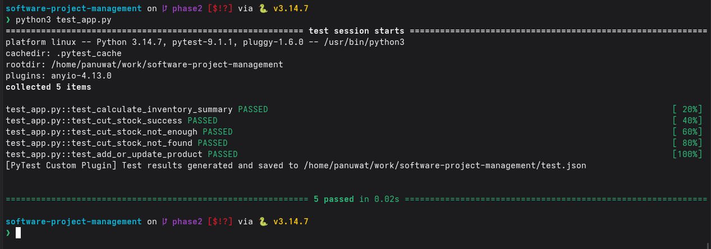
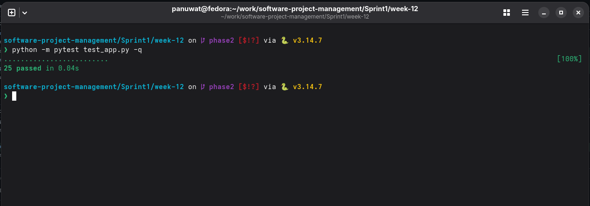

รายงานปิด Sprint 1 — ระบบจัดการสินค้าคงคลังแบบ CLI
สรุปหลักฐาน รายงานผลลัพธ์การดำเนินงาน 13 หมวดตาม Sprint1/sprint1.md
เพื่อปิดรอบการพัฒนาและวางแผนส่งต่อ Sprint 2
1. วัตถุประสงค์และขอบเขต Sprint 1
เป้าหมายหลักจาก Project Charter คือการเพิ่มความเสถียรของโปรแกรม CLI, ปรับโครงสร้างเพื่อนำตัวแปรโกลบอล
x ออกและแยกโมดูลอย่างเป็นระเบียบ, รักษาความถูกต้องของข้อมูลด้วยการเขียน JSON แบบอะตอมมิก (Safe
Atomic Write) และเพิ่มการทดสอบอัตโนมัติ (Automated Testing)
การทบทวนระบบดั้งเดิม (week-1/app_v1.py) พบข้อจำกัดสำคัญ ได้แก่ โครงสร้างแบบ Monolithic 5 เมนู
ใช้ตัวแปรโกลบอล db และ x, มีการแปลงชนิดข้อมูลด้วย int() และ
float() โดยไม่มีบล็อก try-except และยอมรับค่าตัวเลขติดลบ ซึ่งเสี่ยงต่อการล่มกะทันหัน
v2.0.0 ส่วน Sprint 2 (ID 48) ยังเปิดเพื่อพัฒนา v3.0 แบบ SQLite และงานระบบสมาชิก (Member System)
ต่อไป ข้อมูลตัวเลขเชิงแผนงานและต้นทุนทั้งหมดเป็นข้อมูลสมมติเพื่อการเรียน
2. ทีมและบทบาทหน้าที่
อ้างอิงบทบาทหน้าที่จาก README.md และการกำหนดความรับผิดชอบตาม RACI Matrix ใน
Sprint1/week-3/raci.md:
| บุคคล | บทบาท | ความรับผิดชอบหลัก |
|---|---|---|
| นาย ภานุวัฒน์ ต๋าคำ (Panuwat) | PM / Developer | บริหารจัดการภาพรวม กำหนดกรอบเวลา ประสานงาน และดำเนินการพัฒนาโค้ด Input Validation และ Atomic Save |
| นาย เอกพันธ์ ทศทิศรังสรรค์ (Ekkapan) | QA / Tester | ออกแบบกรณีการทดสอบ (Test Cases) จัดทำชุดทดสอบอัตโนมัติด้วย PyTest และยืนยันคุณภาพระบบ |
| นาย ณฐภาพ สายหล้า (Nattapap) | Tech Lead / Architect | ออกแบบสถาปัตยกรรม To-Be ตรวจสอบคุณภาพโค้ด (Code Review) ตามมาตรฐาน PEP 8 และอนุมัติ Pull Request |
3. สรุปงานรายสัปดาห์ W1 - W12
- W1: จัดทำกฎบัตร ขอบเขต และความเข้าใจระบบเดิมใน
week-1/Project-Charter.md,week-1/scope.md,week-1/doc.mdโดยใช้week-1/app_v1.pyเป็นฐานเปรียบเทียบความเสี่ยง - W2: วิเคราะห์กระแสข้อมูลและจุดอันตรายใน
week-2/DFD.md,week-2/Hotspot.md,week-2/Static-Analysis.mdและweek-2/blueprint.mdโดยweek-2/Member-Discount.mdเป็นงานออกแบบต่อยอด ไม่ใช่ฟังก์ชันที่ส่งมอบแล้ว - W3: พัฒนาโค้ดปรับโครงสร้างและกำหนดเกณฑ์ความสำเร็จใน
week-3/app_v2.py,week-3/dod.md,week-3/raci.mdพร้อมชุดทดสอบอัตโนมัติ - W4: ทดสอบและปรับปรุงเวอร์ชัน refactor ใน
week-4/app.pyและweek-4/test_app.py(จากการตรวจสอบไฟล์พบว่าweek-3/app_v2.py,week-4/app.pyและapp.pyที่รากรีโปเหมือนกันทุกไบต์) - W5: บันทึกการประเมินสถาปัตยกรรม คุณภาพ และตารางต้นทุนใน
week-5/architecture.md,week-5/iso25010_evaluation.md,week-5/budget_worksheet.md - W6: จัดทำเกณฑ์การสื่อสาร/DoD และสถาปัตยกรรมเป้าหมายใน
week-6/Communication_Matrix_and_DoD.mdกับweek-6/To_Be_Architecture.md(SQLite, Member tier และ Checkout เป็นแบบออกแบบเท่านั้น) - W7: จัดทำ baseline และแผน Sprint ใน
week-7/Cost_Baseline_and_Sprint_Plan.mdและรายงานคุณภาพในweek-7/ISO_14598_Quality_Report.md - W8: วิเคราะห์ผลกระทบ CR-01 และติดตาม Sprint ใน
week-8/CR-01_Impact_Analysis.mdและweek-8/Sprint1_Tracking.md(CR-01 จัดเป็น Normal Change ส่งต่อทำใน Sprint 2) - W9: สรุป EVM Sprint 1 ถอดบทเรียน และส่งต่องานใน
week-9/EVM_Sprint1.md,week-9/Retrospective_Sprint1.mdและweek-9/Sprint_Transition.md - W10: บันทึกการตัดสินใจ CR-02 และการแก้ข้อบกพร่อง BUG-101 ใน
week-10/CR-02_Impact_Decision_Form.md,week-10/CCB_Meeting_Minutes.md,week-10/Defect_Log_BUG-101.md,week-10/Contingency_Reserve_Log.md - W11: ควบคุมคุณภาพและแช่แข็งขอบเขตใน
week-11/Hardening_Report.md,week-11/Flow_Metrics.mdและweek-11/Scope_Freeze_Agreement.md - W12: รวมการวิวัฒนาการผลิตภัณฑ์ หลักฐานทดสอบ EVM และการเตรียมปล่อยใน
week-12/app.py,week-12/test_app.py,week-12/CHANGELOG.md,week-12/Final_EVM.md,week-12/UAT_Sign_Off_Sheet.mdและweek-12/Release_Checklist.md
4. สิ่งที่ส่งมอบ (Deliverables)
| สถานะ | รายการ | หลักฐานและข้อกำหนด |
|---|---|---|
| Delivered | โค้ด refactor: Product, InventoryManager, InventoryCLI |
InventoryManager บันทึกไฟล์ผ่านไฟล์ชั่วคราวและ os.replace รองรับคีย์เก่า
n/q/p/c และมีระบบ Input Validation
|
| Delivered | ความเข้ากันได้กับข้อมูลเก่าและการแก้ BUG-101 | ใช้ dict.get('barcode', '') fallback สำหรับ barcode
ทำให้โหลดข้อมูลเก่าได้โดยไม่เกิด KeyError |
| Delivered | การวิวัฒนาการ W12 (Barcode, Alert, CSV) | barcode ค่าเริ่มต้นสตริงว่าง, reorder_point ค่าเริ่มต้น 5,
แจ้งเตือนสต็อกต่ำด้วย <=, และ CsvReportExporter มีหัวตาราง
ProductID,ProductName,Barcode,Quantity,ReorderPoint,Price
|
| ออกแบบเท่านั้น | SQLite, Member tiers และ Checkout Flow | อยู่ใน week-2/blueprint.md, week-2/Member-Discount.md,
week-6/To_Be_Architecture.md (ยังไม่ได้ implement ในโค้ดจริง)
|
| คงค้าง | SQLite v3.0 และงานระบบสมาชิก | อยู่ใน Sprint 2 backlog ตามสถานะที่ยืนยันจาก Jira |
ค่ารายงาน Static Analysis ที่รายงานไว้เดิม:
LOC 99 บรรทัด, Pylint 7.10/10 และความซับซ้อนของ main() CC 14 ระดับ C (เป็นค่าที่รายงานไว้เดิม
ไม่ได้วัดซ้ำในรายงานฉบับนี้)
5. หลักฐานทดสอบ (Testing Evidence)
| ชุดทดสอบ | ผลที่ยืนยัน | ขอบเขตการทดสอบ |
|---|---|---|
test_app.py ที่รากรีโป |
5 passed | พฤติกรรมหลักของระบบ refactor (เพิ่ม/ลดสต็อก, คำนวณมูลค่ารวม, ดักจับค่าติดลบ) |
week-12/test_app.py |
25 passed | 5 baseline + 4 CR-01 + 6 CR-02 + 4 BUG-101 + 3 CLI + 3 integration |


python -m pytest test_app.py -q ใน week-12 ผ่าน 25 passed
(หลักฐานชุดวิวัฒนาการ)หมายเหตุการทดสอบ: ต้องรันสองชุดแยกกัน เนื่องจากการสั่ง collect ร่วมกันจะชนกันจากชื่อไฟล์ร่วม
test_app.py หลักฐานด้านความแข็งแกร่งยืนยันการเขียนแบบอะตอมมิกและการจับข้อยกเว้นแบบเจาะจง การสแกน
Bandit สะอาด ขณะที่ Flake8 ยังรายงานรายการ line-length E501 จึงยังไม่ถือว่าสะอาดครบทุกกฎ lint
(เป็นหนี้ทางเทคนิคคงค้าง)
6. EVM และงบประมาณ (Earned Value Management)
ตัวเลขทุกตารางในหัวข้อนี้เป็นข้อมูลสมมติเพื่อการเรียน และใช้เพื่อสรุปการควบคุมโครงการในรายวิชาเท่านั้น
| ช่วงการดำเนินงาน | PV (บาท) | EV (บาท) | AC (บาท) | SV / CV หรือดัชนี |
|---|---|---|---|---|
| Sprint 1 | 4,000 | 3,000 | 4,200 | SV -1,000 บาท; CV -1,200 บาท |
| Sprint 2 | 11,350 | 11,000 | 11,500 | SPI 0.97; CPI 0.96 |
| Final (รวม 3 Sprints) | 15,525 | 15,525 | 16,100 | SPI 1.00; CPI 0.96; CV -575 บาท |
Sprint 1 ล่าช้าและเกินงบตาม SV/CV ข้างต้น ส่วนผลรวมสุดท้ายตรงตามแผนด้านเวลา (SPI 1.00) แต่เกินงบ 575 บาท หรือ 3.7% ซึ่งครอบคลุมด้วยเงินสำรองความเสี่ยง ข้อมูลสมมติเพื่อการเรียน
| รายการงบประมาณและการติดตาม | ค่าตัวเลข | หมายเหตุ |
|---|---|---|
| Baseline ที่อนุมัติจาก Week 7 | 18,823 THB | ข้อมูลสมมติเพื่อการเรียน |
| เงินสำรองคงเหลือ (Contingency Remaining) | 2,823 - 1,350 - 575 = 898 THB | ข้อมูลสมมติเพื่อการเรียน |
| Burnup Points | 27/29 points (93%) | ข้อมูลสมมติเพื่อการเรียน |
| Team Velocity Trend | S1: 15 / S2: 22 / S3: 12 | ข้อมูลสมมติเพื่อการเรียน |
หมายเหตุข้อระวัง: ต้องไม่รวมตัวเลขคนละชุดเข้าด้วยกัน Worksheet ของ Week 5 ระบุ 39,100 THB และ transcript ระบุ 15,525 THB ซึ่งต่างจาก baseline ที่อนุมัติ 18,823 THB ทั้งหมดเป็นข้อมูลสมมติเพื่อการเรียนที่มีฐานการคำนวณต่างกัน
7. สรุป Change Requests และ Defect
| รายการ | ผลสรุปการดำเนินงาน | ผลกระทบและสถานะ |
|---|---|---|
| CR-01 | เพิ่ม Barcode และ Reorder Point | จัดเป็น Normal Change, เพิ่ม 8 man-hours (ข้อมูลสมมติเพื่อการเรียน) วางในแผน Sprint 2 |
| BUG-101 | KeyError: 'barcode' เมื่อ JSON เก่าไม่มีฟิลด์ |
วิเคราะห์รากเหง้าด้วย 5 Whys แก้ด้วย dict.get('barcode', '') fallback ในชั้น Repository
เพื่อรองรับ Backward Compatibility |
| CR-02 | ส่งออกรายงาน CSV สินค้าสต็อกต่ำฉุกเฉิน | ผ่านความเห็นชอบจาก CCB; 4.5 ชั่วโมง × 300 THB/ชั่วโมง = 1,350 THB เบิกจากงบสำรอง Contingency Reserve (ข้อมูลสมมติเพื่อการเรียน) |
CR-02 ใช้คลาสแยกหน้าที่ CsvReportExporter ตามหลัก Single Responsibility Principle และมีหัวตาราง
CSV ตามที่ระบุในหัวข้อสิ่งที่ส่งมอบ การอนุมัติและค่าใช้จ่ายในตารางเป็นข้อมูลสมมติเพื่อการเรียน
8. UAT และความพร้อมปล่อย (UAT & Release Readiness)
เอกสาร UAT_Sign_Off_Sheet.md กำหนดสถานการณ์ UAT-SC01 ถึง UAT-SC03 ได้แก่ การรับสินค้า,
ตัดสต็อกให้ถึงจุดแจ้งเตือน และส่งออก CSV เพื่อตรวจใน Excel
UAT_Sign_Off_Sheet.md ยังคงว่าง สถานะปัจจุบันคือรอการลงนามยอมรับอย่างเป็นทางการ (Pending Formal
Acceptance) จึงยังไม่ถือว่า UAT sign-off เสร็จสมบูรณ์สถานะ Git Release Tag: เอกสาร
CHANGELOG.md สำหรับ
v2.0.0-evolution จัดเตรียมไว้เรียบร้อยแล้ว แต่ยังไม่มี Git tag v2.0.0-evolution
บนสาขา main แท็กที่พบในระบบปัจจุบันคือ v1.0.0 เท่านั้น
ความพร้อมในการปล่อยจึงอยู่ในระดับ "เตรียมเอกสารและทดสอบผ่านแล้ว แต่รอ formal sign-off, การรวมสายตาม release
checklist และการติดแท็กทางการ"
9. ความเสี่ยง ข้อจำกัด และหนี้เทคนิค (Technical Debt)
- ความเข้ากันได้ของข้อมูล JSON: ข้อมูล JSON เก่ายังมีความเสี่ยงด้าน Compatibility การทำ fallback ในปัจจุบันช่วยบรรเทา BUG-101 แต่ยังไม่ใช่ระบบ Schema Migration เต็มรูปแบบ
- หนี้รูปแบบโค้ด (Linting): การตรวจสอบด้วย Flake8 ยังมีรายการ line-length
E501คงค้างอยู่ แม้ว่าการสแกนด้วย Bandit จะสะอาดและมีกลไก Atomic Write แล้ว - ฟังก์ชันที่ยังเป็นแบบออกแบบ: ฐานข้อมูล SQLite, ระบบสมาชิก (Member tiers) และขั้นตอนชำระเงิน (Checkout) ยังคงเป็นแบบออกแบบเท่านั้น ไม่ควรนำเสนอว่าเป็นฟังก์ชันที่พัฒนาเสร็จแล้ว
- สถานะการลงนามและแท็ก: การลงนาม UAT Formal Sign-off และ Git Release Tag ยังคงค้างอยู่ ทำให้การปล่อยซอฟต์แวร์สู่สายหลักยังไม่สมบูรณ์
10. แผนงานต่อใน Sprint 2
- นำแบบออกแบบ SQLite v3.0 มาวางแผนพัฒนาและเขียน Unit Tests โดยไม่อ้างว่าเสร็จแล้ว
- พัฒนาระบบสมาชิก (Member tiers) และตรรกะ Checkout ตาม
blueprint.md,Member-Discount.mdและ To-Be Architecture - จัดการงาน CR-01 ตามแผนของ Sprint 2 และรักษาชุด Regression Tests สำหรับข้อมูล Legacy
- ดำเนินการตามขั้นตอน Formal UAT Sign-off, ตรวจสอบด่านใน Release Checklist และสร้าง Git Tag
v2.0.0-evolutionเมื่อเงื่อนไขครบ - แก้ไขรายการ Flake8
E501ที่ยังค้างอยู่ และรักษาผลการสแกนความปลอดภัย Bandit ให้ผ่าน 100%
11. การทบทวนสปรินต์ (Sprint Review & Retrospective)
Sprint 1 ปิดแล้วโดยมี 20 issues สถานะ Done ภายใต้เวอร์ชัน v2.0.0 (ข้อมูลสมมติเพื่อการเรียน)
ส่วนผลการเดโมต่อหน้าผู้รับการสาธิต วันเวลา ผู้เข้าร่วม และการอนุมัติ: หลักฐานไม่พบ
| หัวข้อ | สิ่งที่ยืนยันได้จากหลักฐาน | ผลและข้อสังเกต |
|---|---|---|
| สิ่งที่จะสาธิต | สคริปต์ใน Transition กำหนดให้แสดงโครงสร้าง Product, Repository, Service รัน PyTest ทดลองเพิ่ม/ลดสต็อกและคำนวณราคารวม | เป็นขอบเขตของสคริปต์เดโม ไม่ใช่หลักฐานยืนยันว่าเดโมเกิดขึ้นครบทุกขั้นตอนต่อหน้าผู้ประเมิน |
| ผลการทดสอบที่ผ่าน | Transition บันทึก regression ผ่าน 4 tests ใน 0.12 วินาที (ข้อมูลสมมติเพื่อการเรียน) รายงานปัจจุบันยืนยัน week-12 ผ่าน 25 tests | ยืนยันความพร้อมทดสอบตามหลักฐาน แต่การรับรองจาก Sponsor: หลักฐานไม่พบ |
| สิ่งที่ส่งมอบเพื่อสาธิต | การ refactor, การรองรับข้อมูลเก่า, Barcode, Reorder Point และการส่งออก CSV | SQLite, Member tiers และ Checkout ยังเป็นแบบออกแบบ ไม่ควรนำเสนอว่าเสร็จแล้ว |
| ข้อเสนอแนะจากผู้เข้าร่วมเดโม | หลักฐานไม่พบ | ไม่บันทึกความเห็นหรือการอนุมัติโดยอนุมาน |
• Mad: เสียเวลามากกับ Merge Conflict จากการผ่าตัดโครงสร้างใหญ่ จนทำให้ SV −1,000 บาท และ CV −1,200 บาท (ข้อมูลสมมติเพื่อการเรียน)
• Sad: ประเมินงาน refactor ต่ำเกินไปเนื่องจากหนี้ทางเทคนิคที่ซ่อนอยู่ใน
app_v1.py• Glad: ชุดทดสอบ PyTest สามารถตรวจจับข้อบกพร่องได้ก่อนการส่งมอบ และทีมร่วมมือกันแก้ไข conflict ได้สำเร็จ
• Action Item สู่ Sprint 2: แจ้ง blocker ใน Daily Standup ทุกวัน, ตรวจ Peer Review ภายใน 12 ชั่วโมงหลังแจ้งเตือน และเริ่มใช้แนวทาง Test-Driven Refinement (TDR)
12. ตารางงานค้างและงานยกยอด (Carryover & Pending Tasks)
| งาน | สถานะ | สาเหตุ | แนวทางส่งต่อสู่ Sprint 2 |
|---|---|---|---|
| SQLite v3.0 | ออกแบบเท่านั้น | ยังไม่มีการ implement โค้ดจริง | พัฒนาและทดสอบใน Epic SQLite/Member ขนาด 17 story points (ข้อมูลสมมติเพื่อการเรียน) |
| Member tiers | ออกแบบเท่านั้น | ยังไม่มีการ implement โค้ดจริง | อยู่ใน Epic เดียวกันข้างต้น |
| Checkout Flow | ออกแบบเท่านั้น | มีเพียงพิมพ์เขียวและเอกสารสถาปัตยกรรม | แตกงานพัฒนาและทดสอบเข้า Sprint 2 backlog |
| Formal UAT sign-off | ค้าง | ช่องลายเซ็นในเอกสาร UAT ยังคงว่าง | เพิ่มงานรับลายเซ็นสองฝ่ายใน Sprint 2 ห้ามระบุว่าอนุมัติแล้วจนกว่าจะมีหลักฐาน |
| Release checklist | ค้าง | รายการทั้ง 3 ด่านยังไม่ถูกติ๊กเครื่องหมายครบ | ดำเนินการตามขั้นตอนทีละด่านก่อนผสานสายหลัก |
Git tag v2.0.0-evolution |
ค้าง | ในรีโปมีเพียง tag v1.0.0 |
สร้าง annotated tag หลังผ่าน UAT checklist ครบถ้วน |
Flake8 E501 |
ค้าง (หนี้เทคนิค) | ยังมี line-length violations แม้ Bandit สะอาด | ดำเนินการแก้ lint และรันสแกนซ้ำใน Sprint 2 |
หมายเหตุ: งาน CR-01 (Barcode & Reorder
Point) ถือว่าส่งมอบแล้วใน week-12/app.py พร้อมชุดทดสอบอัตโนมัติ ไม่ใช่งานยกยอด
13. ภาคผนวก ดัชนีหลักฐานอ้างอิง (Evidence Index)
| หมวดหลักฐาน | เส้นทางไฟล์ต้นทาง |
|---|---|
| ทีมและบทบาทหน้าที่ | README.md, Sprint1/week-3/raci.md |
| Charter และระบบเดิม | Sprint1/week-1/Project-Charter.md, Sprint1/week-1/scope.md,
Sprint1/week-1/doc.md, Sprint1/week-1/app_v1.py
|
| การวิเคราะห์และแบบออกแบบ | Sprint1/week-2/DFD.md, Sprint1/week-2/Hotspot.md,
Sprint1/week-2/Static-Analysis.md, Sprint1/week-2/blueprint.md,
Sprint1/week-2/Member-Discount.md
|
| โค้ดและเกณฑ์งาน refactor | Sprint1/week-3/app_v2.py, Sprint1/week-3/dod.md,
Sprint1/week-4/app.py, app.py, test_app.py
|
| แผนบูรณาการ | Sprint1/Phase1/Integrated_Planning_Proposal.md |
| แผนงาน งบประมาณ และสถาปัตยกรรม | Sprint1/week-5/, Sprint1/week-6/, Sprint1/week-7/ |
| การติดตามและ EVM Sprint 1 | Sprint1/week-8/CR-01_Impact_Analysis.md,
Sprint1/week-8/Sprint1_Tracking.md, Sprint1/week-9/EVM_Sprint1.md,
Sprint1/week-9/Sprint_Transition.md
|
| Change Requests และข้อบกพร่อง | Sprint1/week-10/CR-02_Impact_Decision_Form.md,
Sprint1/week-10/CCB_Meeting_Minutes.md,
Sprint1/week-10/Defect_Log_BUG-101.md,
Sprint1/week-10/Contingency_Reserve_Log.md
|
| Hardening และการแช่แข็งขอบเขต | Sprint1/week-11/Hardening_Report.md, Sprint1/week-11/Flow_Metrics.md,
Sprint1/week-11/Scope_Freeze_Agreement.md
|
| Release, EVM สุดท้าย และ UAT | Sprint1/week-12/app.py, Sprint1/week-12/test_app.py,
Sprint1/week-12/CHANGELOG.md, Sprint1/week-12/Final_EVM.md,
Sprint1/week-12/UAT_Sign_Off_Sheet.md, Sprint1/week-12/Release_Checklist.md
|